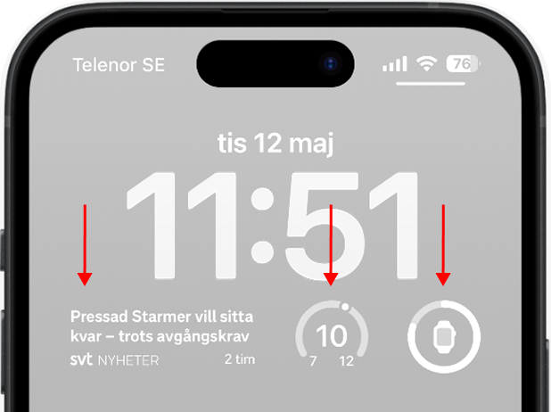
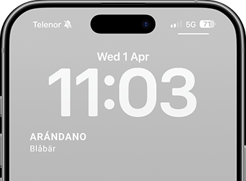
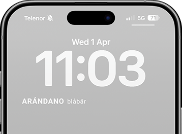
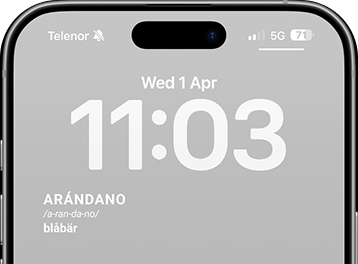
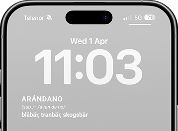
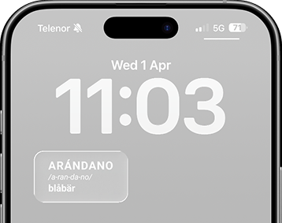
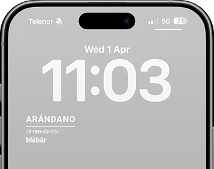
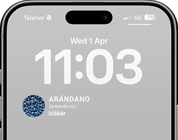

01. peripheral encounters
designing lock screen widgets for vocabulary learning
the challenge
Vocabulary learning often requires dedicated time and concentration – something that's hard to fit into everyday life.
This project explores how the iOS lock screen, a space for quick and repeated glances, can be designed to support meaningful vocabulary learning in a natural and non-intrusive way.

my approach
I worked on this thesis together with Olivia Galazka, taking a research-through-design approach — meaning the prototype itself became a tool for generating knowledge, not just a deliverable at the end.
We built a Figma prototype simulating a real iOS lock screen and tested two layers: five content formats, ranging from a minimal word + translation up to a full dictionary-style definition.




We ran 12 semi-structured interviews combined with hands-on testing, plus 3 pilot interviews to refine the setup beforehand.
"I don't really check it, I just want into the phone. It's just a second, checking the time." — study participant, on how little attention a lock screen actually gets
the solution
Word + pronunciation + translation (variant 3) was preferred by half of all participants — not the simplest option, but the one where every piece of information earned its place.
On the visual side, we tested three treatments on top of that winning format: a box, a divider line, and an image.



The divider won by a clear margin — it added no new information at all, but gave the eye a clear place to start.
"The eye doesn't know where to look when the word is unfamiliar. But then the divider is really good." — study participant
Concept campaign · Bachelor thesis project 2026